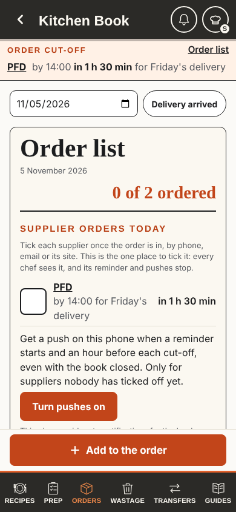

Service council, round 2 · 5 November 2026 · Chosen: the recommended mix, built the same day
The head chef's ask: "if I need an order for Wednesday I have to order it before Friday 4 pm; another supplier, if I need something for Friday it has to be in by Tuesday 4 pm". Three ways to set those patterns on top of the usual cut-offs, and reminders that warn a day early. A preview only: nothing here saves, and every supplier and time is made up.
Round 1 said Build smaller (3 of 5). These are the smaller core. The three designs differ only in the head chef's setup page and in how much reminder choice is left.
1. Each delivery day knows its own order-by day and time. "Wednesday delivery: order by Friday 16:00." "The day before at 14:00" is a quick fill, not a second rule, so nothing hides which rule wins.
2. Reminders name the date. "for Wed 11 Nov", not "for Tuesday". Two deliveries ordered at the same time on the same day are one order and one tick: "for Mon 9 and Wed 11 Nov".
3. A heads-up the day before, only when an order closes 2 or more days before its delivery: one line under "Tomorrow, heads-up" on the Order list's supplier list, with an Ordered already button rather than a tick box (only for an order placed early; it stops the next day's bar and pushes, with Undo), and one push at [15:00, between services, to confirm]. Never on the bar over every page.
4. Clashes are refused. One supplier cannot close at two different times on the same day (one tick covers the day). Order-by days reach back up to 6 days; 1 or 2 weeks before stays a fill choice.
5. Times in 24 hours on the setup page ("16:00", never "04:00 PM").
PFD closes today. Coast Seafood's Wednesday order closes tomorrow at 16:00, five days ahead of its delivery, so it shows under Tomorrow with its own tick. Today the book says nothing about it until Friday 12:00.
Today's book (measured)

Every design
5 November 2026
0 of 1 ordered
Supplier orders
Tomorrow, heads-up
Tick each supplier once the order is in. Ordered already is only for an order placed early: it stops tomorrow's reminder, with Undo.
The pushes for Coast Seafood
None of these go once a chef has ticked Coast Seafood for Friday, or tapped Ordered already on Thursday. Nothing is ticked by reading the heads-up.
Changes the least. Today's supplier form stays: delivery days, the usual "Order closes" and time, and Remind us. Under it, every delivery day is listed with its order-by day. Change one day in place; it turns orange and offers Back to usual.
Laptop, Admin > Order cut-offs
Phone
Rethinks the flow. One week grid for every supplier: an orange box on each order day ("16:00 for Wed"), a grey Delivery mark on each delivery day. Tap a supplier to edit its order days on the side (a sheet on a phone), written order first: "Order by Fri 16:00, arrives Wed". Reminders are set once for every supplier.
Laptop, Admin > Order cut-offs
Phone
Removes the most. Each supplier is a card with one line per delivery day: "Wed delivery, order by [Fri] [16:00]", and the next real dates beside it. Same for all fills every line at once. Order closes, Remind us and How reminders work go: every supplier gets the same reminders, written once at the top.
Laptop, Admin > Order cut-offs
Phone
Five of six reviewers ranked C first. A supplier whose days all follow one rule shows as one line until a day is changed (from A). A day that differs from the others is tinted orange, so the special pattern stands out (from A). One Set every day per supplier, which asks before it overwrites a different day. Rename or remove is a full-size button. The reminder plan is written once, plainly.
Laptop, Admin > Order cut-offs
Phone
Measured on these previews and today's book in the click-test stand-in (four suppliers, two with a special day). Taps count the head chef adding "Coast Seafood also delivers Wednesday, ordered by Friday 16:00" to a supplier that already delivers Monday (the day before, 14:00), up to and including Save. A dropdown counts as 2 taps; typing the time is not counted.
| Today | A. Usual, then each day | B. Order week | C. Line per day | Recommended mix | |
|---|---|---|---|---|---|
| Set the special pattern | 7 taps, and only as a second supplier row with a made-up name and its own tick (the catalogue links one of them) | 7 taps | 8 taps | 6 taps | 6 taps |
| Tick a supplier's order (sous chef) | 1 tap | 1 tap | 1 tap | 1 tap | 1 tap |
| Rows on the phone's Order list, Thursday 12:30 | 1 (Coast Seafood not shown) | 2 (the heads-up adds one row, only the day before) | |||
| Setup page height, laptop | 2,407 px (6 rows) | ||||
| Setup page height, phone | 3,015 px | ||||
| Navigation levels | 1 | 1 | 2 (row, then editor) | 1 | 1 |
| Build size | 2 pull requests | 3 pull requests | 2 pull requests | 2 pull requests | |
| Relearning | Little | Most | Some | Some | |
| Reminder choices | Per supplier | Per supplier | Once for all | None: one plan | None: one plan (the head chef may keep Remind us) |
| New reads, rules | No rules change. Phones: no new reads. Push job: about 12 reads a day more (a 1 hour heads-up window) | ||||
| Risk | Old copies of the book ignore the new field and an old People save drops it: the old fields keep each supplier's earliest cut-off, so an old copy reminds early, never late | ||||